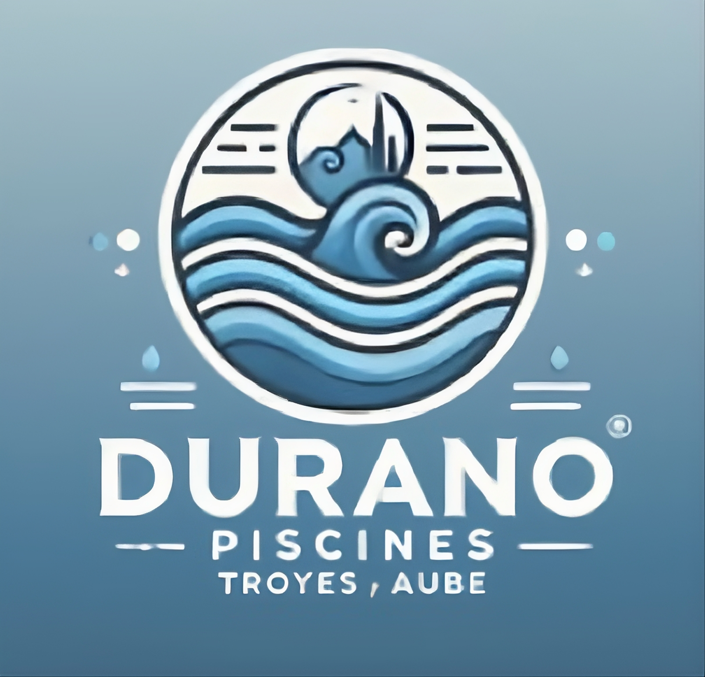
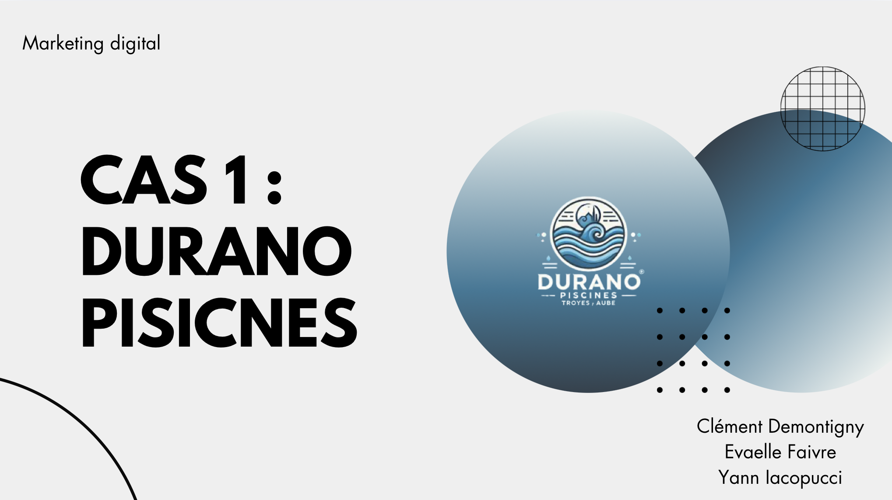

Statégie marketing
Statégie, analyse, recommandations
Présentation du projet
Ce projet consiste à proposer une stratégie marketing pour l’entreprise Durano piscines, implantée depuis plusieurs années dans la région troyenne.
L’entreprise connaît une baisse d’activité et souhaite se relancer tout en augmentant sa notoriété locale.
La réflexion prend en compte la cible définie ainsi que le budget alloué à la campagne.
Le travail repose sur le choix d’actions marketing adaptées, à la fois traditionnelles et digitales.
Ce que j’ai fait
- Analyse de la situation de l'entreprise et de son marché
- Etude de la cible
- Définiton des objectifs de la campagne
- Séléction des actions marketing
- Comparaison des supports de communication
- Choix des canaux de diffusions
- Répartition du budget
- Estimation de l'impact des actions

